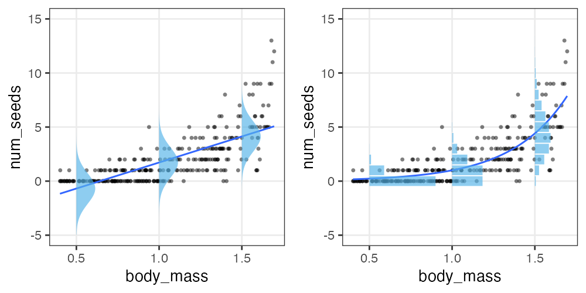
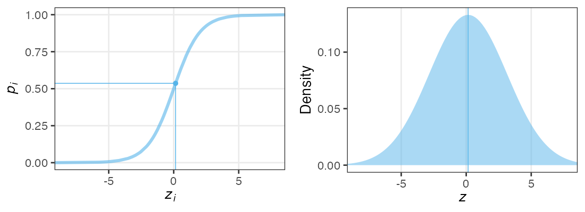
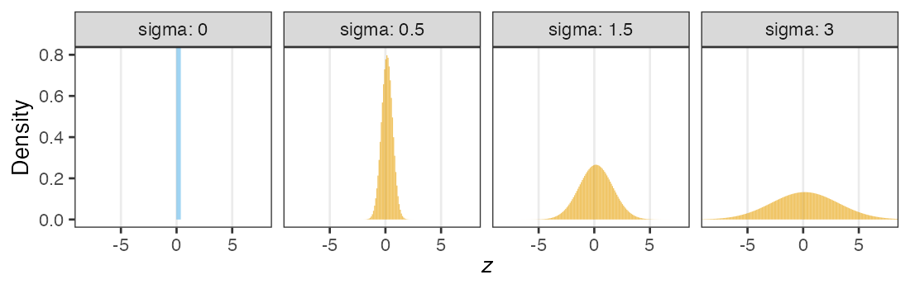
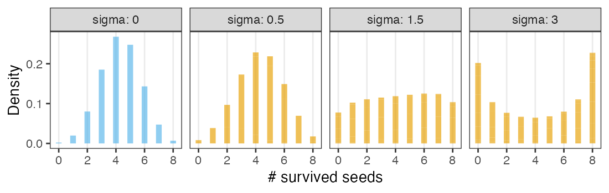
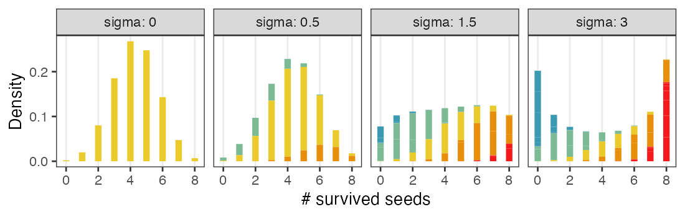
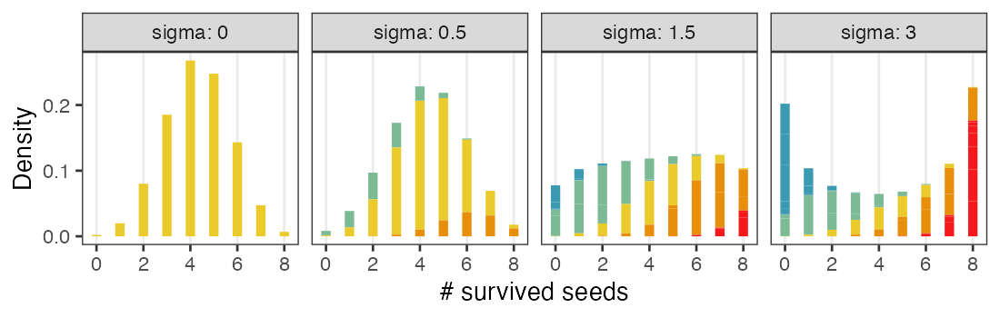
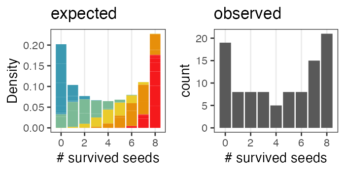

統計モデリング実習 2022 TMDU
(Graduate School of Life Sciences, Tohoku University)
- 導入、直線回帰
- 確率分布、擬似乱数生成
- 尤度、最尤推定
- 一般化線形モデル (GLM)
- 個体差、一般化線形混合モデル (GLMM)
- ベイズの定理、事後分布、MCMC
- StanでGLM
- 階層ベイズモデル (HBM)
https://heavywatal.github.io/slides/tmd2022stats/
ちょっとずつ線形モデルを発展させていく

久保先生の"緑本"こと
「データ解析のための統計モデリング入門」
をベースに回帰分析の概要を紹介。
線形モデル LM (単純な直線あてはめ)
↓ いろんな確率分布を扱いたい
一般化線形モデル GLM
↓ 個体差などの変量効果を扱いたい
一般化線形混合モデル GLMM
↓ もっと自由なモデリングを！
階層ベイズモデル HBM
有名な確率分布対応関係ふりかえり

- 離散一様分布
- コインの表裏、サイコロの出目1–6
- 幾何分布
- 成功率pの試行が初めて成功するまでの失敗回数
- 二項分布
- 成功率p、試行回数nのうちの成功回数
- ポアソン分布
- 単位時間あたり平均$\lambda$回起こる事象の発生回数
- ガンマ分布
- ポアソン過程でk回起こるまでの待ち時間
- (k = 1のとき指数分布と呼ばれる)
- 正規分布
- 確率変数の和、平均値。使い勝手が良く、よく登場する。
何でもかんでも直線あてはめではよろしくない
- 観察データは常に正の値なのに予測が負に突入してない？
- 縦軸は整数。しかものばらつきが横軸に応じて変化？
- データに合わせた統計モデルを使うとマシ
ちょっとずつ線形モデルを発展させていく
久保先生の"緑本"こと
「データ解析のための統計モデリング入門」
をベースに回帰分析の概要を紹介。
線形モデル LM (単純な直線あてはめ)
↓ いろんな確率分布を扱いたい
一般化線形モデル GLM
↓ 個体差などの変量効果を扱いたい
一般化線形混合モデル GLMM
↓ もっと自由なモデリングを！
階層ベイズモデル HBM
n個のうちy個生存。二項分布に従……わない！
植物100個体から8個ずつ種子を取って植えたら全体で半分ちょい発芽。
親1個体あたりの生存数はn=8の二項分布になるはずだけど、
極端な値(全部死亡、全部生存)が多かった。個体差？

個体差をモデルに組み込みたい
各個体の生存率$p_i$をそのままパラメータにすると過剰適合。
「パラメータ数 ≥ サンプルサイズ」の“データ読み上げ”モデル。
i.e., この個体は4個生き残って生存率0.5だね。次の個体は2個体だから……

個体の生存能力をもっと少ないパラメータで表現できないか？
個体差をモデルに組み込みたい
各個体の生存率$p_i$が能力値$z_i$のシグモイド関数で決まると仮定。
その能力値は全個体共通の正規分布に従うと仮定:
$z_i \sim \mathcal{N}(\hat z, \sigma)$

パラメータ2つで済む: 平均 $\hat z$, ばらつき $\sigma$ 。
前者は標本平均 $\hat p$ から求まるとして、後者どうする？
個体能力のばらつき $\sigma$ が大きいと両端が増える
普通の二項分布は個体差無し $\sigma = 0$ を仮定してるのと同じ。

zの値で色分けしてみると想像しやすい
正規分布と二項分布の混ぜ合わせ……?
 

混合分布。ただの二項分布よりも良いあてはまり。
パラメータp(を決めるz)ごとに二項分布を作って、重み付けして足したもの。

🔰 乱数生成で混合分布を実感してみよう
- Quarto Markdown を用意する
- 100個体の能力値zを正規乱数で生成。分布を描く。
- 各個体の種子生存率pをシグモイド関数で計算。分布を描く。
sigmoid = function(x, gain = 1) {1 / (1 + exp(-gain * x))} - そのpを使って実際の生存種子数を二項分布(n = 8)から生成。分布を描く。
- 能力の平均や分散の値を変えたらどうなるか見てみる。
ビールの注文数、再び
お客さんたちが注文したビールの杯数X。平均2.74杯。
はいはい、ポアソン分布でしょ……
いや、分散が大きいぞ。

全員が同じ平均注文数$\lambda$を持つという仮定が間違ってたのかも。
🔰 平均注文数がガンマ分布に従うと仮定して、乱数生成してみよう。
負の二項分布 $~\text{NB}(n, p)$
成功率pの試行がn回成功するまでの失敗回数X。 n = 1 のとき幾何分布と一致。
\[ \text{Prob}(X = k \mid n,~p) = \binom {n + k - 1} k p^n (1 - p)^k \]
失敗回数ではなく試行回数を変数とする定義もある。
平均$\lambda$がガンマ分布でばらついたポアソン分布、とも解釈できる。
($k \to \infty$でポアソン分布と一致)
一般化線形混合モデル GLMM
固定効果(fixed effects) のみ扱っていたGLMを拡張して、
変量効果(random effect) を混合したモデル。
「混合分布を使うモデル」という意味ではないらしい。
\[\begin{split} y_i &\sim \text{Binomial}(n,~p_i) \\ \text{logit}(p_i) &= \beta_0 + \beta_1 x_{1i} + \beta_2 x_{2i} + \ldots + z_{1i} + \ldots \\ z_{1i} &\sim \mathcal{N}(\mu_1,~\sigma_1) \end{split}\]
e.g.,
個体$i$の種子生存率$p_i$は、
(固定効果) 体サイズ$x_{1i}$と日当たり$x_{2i}$に依存し、
(変量効果) よくわからん個体差$z_{1i}$と植木鉢差$z_{2i}$もある。
固定効果にするか、変量効果にするか
推定したパラメータを予測に使うなら固定効果
- 予測に使えそうなので固定効果向き
- 観測・操作した連続値変数: 長さ、重さ、温度、etc.
- 観測・操作したカテゴリカル変数: 性別、投薬、etc.
- 予測に使えないので変量効果向き
- 観測・操作できなかった個体差:
たまたま集まってくれた学生15人 {A, B, C, …}。
Aさんの固定効果を推定できても、Zさんの予測には使えない。
- 観測・操作できなかった個体差:
- 観測・操作できなかったグループ差:
↑の学生をランダム5人ずつに分けたグループ {い、ろ、は}。
いグループの固定効果を推定できても、また集まることはない。
- 観測・操作できなかったグループ差:
どういうときに変量効果を考える必要があるか
データに擬似反復が含まれるとき。
ぜんぶ独立のつもりで解析すると推定が偏ったり誤ったり。
| 植木鉢 | 個体/植木鉢 | 種子/個体 | 疑似反復 | 推定不可 |
|---|---|---|---|---|
| 100個 | 1個体ずつ | 1個ずつ | – | 個体差・鉢差 |
| 25個 | 1個体ずつ | 4個ずつ | 個体 | 鉢差 |
| 20個 | 5個体ずつ | 1個ずつ | 植木鉢 | 個体差 |
| 5個 | 5個体ずつ | 4個ずつ | 植木鉢・個体 | – |
疑似反復あり
→ 観測できなかった個体差・場所差(変量効果)を推定可能
→ そのぶんを差し引いて固定効果を推定したい
GLMMの問題点・展望
- 最尤推定の計算が難しくなるので、あまり複雑にはできない
- ベイズ推定を使えばクリアできる
- GLMの拡張として理解はできても、実際に書くのは難しめ
- 階層ベイズモデルの一種として見るほうが便利
→ ここでGLMMの練習はせず、階層ベイズモデルに進む。

一般化線形(混合)モデルまとめ
- 何はともあれ作図して俯瞰
- GLMは統計モデリングの考え方の根幹
- 確率分布・リンク関数・説明変数
- 尤度・最尤法によるパラメータ推定
- 情報量基準などによるモデル選択
- GLMMは現実のデータ解析に向けた強化
- 疑似反復による変量効果を考慮
- 階層ベイズモデルとして扱うほうが楽